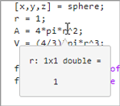
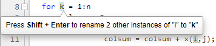

Editor/Debugger Settings
You can customize the visual display and functionality of the Editor, Live Editor, and Debugger using Editor/Debugger settings.
General Settings for the Editor/Debugger
You can specify which editor MATLAB® uses, as well as how the MATLAB Editor and Live Editor behave under various circumstances.
On the Home tab, in the Environment section, click Settings. Select MATLAB > Editor/Debugger, and then adjust setting options as described in the table below.
| Setting | Usage |
|---|---|
| Live script format | Specify the default file format for creating live scripts using the Default live script file format setting.
|
Editor | Select which editor you want the MATLAB desktop to use when you edit a file:
If you select Text
editor, specify the full path for the editor
application you want to use, such as Emacs or vi. For example,
This
setting applies only to plain text files such as MATLAB Code
files ( |
Most recently used file list | In the Number of entries field, type the number of files that you want to appear in the list of recently used files at the bottom of the File menu. |
Opening files in Editor | Select On restart reopen files from previous MATLAB session if you want files open during your last MATLAB session to reopen when you restart MATLAB. |
Select Automatically open files when MATLAB reaches a breakpoint to open a running program file when MATLAB encounters a breakpoint in that file. | |
| Select Display full path of files in the Editor to display the full path of files open in the Editor and Live Editor. The path displays at the top of each open file. | |
Automatic file changes | Select Reload unedited files that have been externally modified if you want the Editor to automatically reload the version of a file that you opened and edited outside of MATLAB when the file currently open in the Editor has no unsaved changes. |
Select Add line termination at end of
file to have MATLAB add a new empty line (sometimes referred to as a
This setting applies only to plain text files
such as files with a | |
Debugging | Specify when to show the inline Step in button using the Show inline Step In buttons setting.
|
Select Open Debugger panel automatically to open the Debugger panel automatically when MATLAB enters debug mode. Clear Open Debugger panel automatically to disable opening the Debugger panel automatically. |
Editor/Debugger Autoformatting Settings
You can quickly format live scripts and functions using autoformatting markup in the Live Editor. You can enable and disable autoformatting as a whole, or as individual options. Autoformatting settings do not apply in the Editor.
On the Home tab, in the Environment section, click Settings. Select MATLAB > Editor/Debugger > Autoformatting, and then adjust setting options as described in this table.
For more information about autoformatting in the Live Editor, see Autoformatting.
| Setting | Usage |
|---|---|
Enable autoformatting in Live Editor | Select to enable autoformatting options in the Live Editor. Once enabled, options can then be enabled or disabled individually. |
Text format | Select *italic*, **bold** to enable bold and
italic formatting using asterisks (*). |
Select _italic_, __bold__ to enable bold and
italic formatting using underscores (_). | |
| Select `monospace`, |monospace| to enable monospace autoformatting. | |
Section break | Select %%, ***, or --- for section break to
enable inserting section breaks by entering %%,
***, or --- and then
Enter. |
Select %% text for section break and heading
to enable inserting section breaks with heading 1 style headings by
entering %%text and then
Enter. | |
Insert Options | Select $LaTeX$ for LaTeX equation to enable
converting LaTeX expressions into equations using
the format $LaTeX$. |
| Select URL for hyperlink to enable converting internet paths automatically to hyperlinks. | |
Select <URL> for hyperlink to enable
converting internet paths to hyperlinks using the format
<URL>. | |
Select [Label](URL) for labeled hyperlink to
enable converting internet paths to labeled hyperlinks using the
format [Label](URL). | |
Select (TM), (SM), (R), and (C) for trademark, service
mark, and copyright symbols to enable inserting
trademark and copyright symbols (™, ℠, ®, and ©) using the format
(TM), (SM),
(R), and (C). | |
Text Style | Select #text for title to enable inserting
titles using the format #text. |
Select ##text, ###text, or ####text for
heading to enable inserting headings using the format
##text for heading 1,
###text for heading 2, or
####text for heading 3. | |
Select Automatic bulleted lists (*, +, or -)
to enable creating bulleted lists by entering *,
+, or - followed by a
space. | |
Select Automatic numbered lists (1., 2.,
etc.) to enable creating numbered lists by entering
1., 2., and so on, followed by a space. |
Editor/Debugger Code Folding Settings
Code folding enables you to expand and collapse blocks of MATLAB code that you want to hide when you are not currently working on them. Code folding settings do not apply in the Live Editor.
On the Home tab, in the Environment section, click Settings. Select MATLAB > Editor/Debugger > Code Folding, and then adjust the settings as described in the table below.
For examples and detailed information about code folding, see Fold Code.
| Setting | Usage |
|---|---|
| Enable code folding | Specifies whether you want code folding enabled for the programming constructs that have their corresponding Enable check box selected. |
| Enable | Specifies whether you want code folding enabled for the corresponding Programming Construct. If you select this option for any construct, but clear the Enable Code Folding option, the construct will not have code folding enabled. |
| Fold Initially | Specifies whether the corresponding Programming Construct displays collapsed (folded) the first time that you open a MATLAB file. |
Editor/Debugger Display Settings
You can change the appearance of the Editor and Live Editor.
On the Home tab, in the Environment section, click Settings. Select MATLAB > Editor/Debugger > Display, and then adjust setting options as described in the table below.
| Setting | Usage |
|---|---|
| General display options | Select Highlight Current Line and select a color to highlight the row with the cursor (also called the caret). This setting does not apply in the Live Editor. |
Select Show line numbers to display line numbers along the left edge of the Editor and Live Editor window. | |
Select Enable data tips in edit mode to display data tips when you are editing a MATLAB code file. (Data tips are always enabled in debug mode.)  For details, see View Variable Value. This setting does not apply in the Live Editor. | |
Select Enable zooming with Ctrl+Scroll to enable changing the zoom level of the Editor and Live editor using the Ctrl+Plus and Ctrl+Minus keyboard shortcuts. On macOS, use the Command key instead of the Ctrl key. | |
Select Enable zooming for individual files to enable changing the zoom level for an individual file open in the Editor or Live Editor. | |
Select an option from Live Editor default view to specify the default location of output when creating new live scripts:
| |
| Select Focus outputs using keyboard when output is inline to enable using the up arrow and down arrow keys to move focus to the output when output is inline. | |
Select Show the Open as a Live Script banner if you want the Open as a Live Script banner to appear at the top of documents in the Editor. | |
| Right-hand text limit | Select Show line to display a vertical line with the specified Color at the specified column (Placement) in the Editor. For details, see Change the Right-Side Text Limit Indicator. This setting does not apply in the Live Editor. |
Editor/Debugger Find and Replace Settings
You can change the behavior of the Find and Replace dialog box, including disabling wrap-around search.
On the Home tab, in the Environment section, click Settings. Select MATLAB > Editor/Debugger > Find and Replace, and then adjust the settings as described in this table.
| Setting | Usage |
|---|---|
| Search behavior | Select Wrap around to continue searching from the start of the document when the end of the document is reached, until the whole document has been searched. |
Select Move cursor while typing to move the cursor to the first result while typing the search phrase. Clear Move cursor while typing to move the cursor only after the entire search phrase has been entered. | |
Select Highlight search results to highlight all search results in the document. | |
| Select Highlight selection matches to highlight instances of text that match your selection in the document. | |
| Search text | Select Use selection for initial search text to use the current selection as the initial search text. |
Select Use nearest word for initial search text to use the word closest to the cursor position as the initial search text. | |
| Search history | Select Persist search and replace history across sessions to save the search and replace history and the Find and Replace dialog box state across sessions. Clear Persist search and replace history across sessions to disable saving any search and replace data, including the Find and Replace dialog box state. |
| Position | Select Position dialog box above document to position the Find and Replace dialog box in added space above the document when the dialog box is open. When the Find and Replace dialog box is closed, the space is removed. This added space prevents the dialog box from covering part of the document when the dialog box is open. |
Editor/Debugger Indenting Settings
You can change the size of tabs and indents and the behavior of smart indenting in the Editor and Live Editor. To enable or disable smart indenting, see Editor/Debugger MATLAB Language Settings and Editor/Debugger Other Languages Settings.
On the Home tab, in the Environment section, click Settings. Select MATLAB > Editor/Debugger > Indenting, and then adjust the settings as described in this table.
| Option | Usage |
|---|---|
| Tabs and indents | Specify Tab size to determine the amount of space inserted when you press the Tab key. When you change the Tab size value, the tab size changes for existing lines in that file, unless you also select Tab key inserts spaces. |
Specify Indent size for smart indenting. | |
Select Tab key inserts spaces to insert a series of spaces when you press the Tab key. Otherwise, a tab acts as one space whose length is equal to Tab size. | |
Select Tab key applies smart indenting to automatically indent lines according to smart indenting settings when you position the cursor in a line or select a group of lines and then press the Tab key. If you select this setting, you cannot insert tabs within a line. | |
| Smart indenting | Select Smart indenting formats entire document to indent the entire document when using smart indenting in the Editor and Live Editor. Clear this option to indent only the current line or selection. |
| Select Add whitespace to empty lines to indent empty lines when using smart indenting in the Editor and Live Editor by adding white space to those lines. Clear this setting to indent only lines that are not empty. | |
| Select Remove automatically inserted whitespace while typing to remove white space added by smart indenting while typing in the Editor and Live Editor. Clear this setting to leave added white space as is. |
Editor/Debugger MATLAB Language Settings
You can specify how code and comments appear in MATLAB code files open in the Editor and Live Editor.
On the Home tab, in the Environment section, click Settings. Select MATLAB > Editor/Debugger > MATLAB Language, and then adjust setting options as described in the table below.
Before R2025a: MATLAB Language settings are located under MATLAB > Editor/Debugger > Language.
| Setting | Usage |
|---|---|
Syntax highlighting | Select Enable syntax highlighting to have the Editor and Live Editor use different colors for different language constructs in MATLAB code files. Then, to change the MATLAB syntax highlighting colors, go to MATLAB > Appearance > Colors. For more information, see Syntax Highlighting. |
Variable and function renaming | Select Enable automatic variable and function renaming to have MATLAB prompt you to rename all instances of a function or variable in a file when you rename a function or variable.  For details on when MATLAB prompts you, see Automatically Rename All Variables or Functions in a File. |
Comment formatting | In the Maximum column width field, enter the maximum number of characters you want to allow in a line of comments, and then select where you want counting to begin. Consider selecting:
|
Select Wrap comments automatically while typing to automatically wrap comments at the Maximum column width value when you type comments in an Editor or Live Editor document. If you clear this option, you can still wrap comments manually, as described in Add Comments to Code. | |
Indenting | Select Apply smart indenting while typing to automatically:
You also can manually apply smart indenting after you type the code. For more information, see Indent Code. |
Select an option from Function indenting format to specify how functions indent in the Editor and Live Editor, as follows:
| |
| File extensions | Add one or more file extensions to associate with the MATLAB Language settings. |
Editor/Debugger Other Languages Settings
You can specify how languages other than MATLAB appear in the Editor and Live Editor. MATLAB applies language settings based on the file extension of the file that is open.
On the Home tab, in the Environment
section, click
Settings. Select Editor/Debugger > Other Languages > language, and then adjust the settings as described in the table below.
Not all settings are available for all languages.
Before R2025a: Other Language settings are located under MATLAB > Editor/Debugger > Language.
| Setting | Usage |
|---|---|
Syntax highlighting | Select Enable syntax highlighting to have the Editor and Live Editor use different colors for different language constructs. Then, adjust the colors you want to use for each language element. |
Indenting | Select Apply smart indenting while typing to automatically:
You also can manually apply smart indenting after you type the code. For more information, see Indent Code. |
| File extensions | Add one or more file extensions to associate with the Language. The settings you specify for that language apply to all files with the listed extensions. |
Editor/Debugger Saving Settings
You can specify if and when MATLAB saves files automatically. You also can specify if, when, and how you want MATLAB to automatically back up files that are open in the Editor. Settings related to backing up files are not available in MATLAB Online.
On the Home tab, in the Environment section, click Settings. Select MATLAB > Editor/Debugger > Saving, and then adjust the settings as described in the table below.
Before R2025a: Backup settings are located under MATLAB > Editor/Debugger > Backup Files.
| Setting | Usage |
|---|---|
Autosave options | Select Save files periodically to have MATLAB periodically save the files you are currently editing. |
In the Every: n
minutes field, specify how often you want MATLAB to save the files you are editing. By default,
MATLAB saves files every 1 minute. | |
Select Save changes upon clicking away from a file if you want the Editor and Live Editor to automatically save changes to a file when you click away from the file. For the changes to be automatically saved upon clicking away, you must have already saved the file at least once. | |
Output save options | Select Save output to file to save
output to your live scripts saved using the plain text Live Code
file format ( |
| Backup options | Select Automatically create backup files while working in the MATLAB Editor to have MATLAB automatically save a copy of the files you are currently editing. For more information about automatically creating backup copies of modified files in the Editor, see Save and Back Up Code. |
Save the backup every:
| |
Save untitled files saves a copy of
new, untitled, files to When there is more than one untitled file, each
additional file is saved to | |
Automatically delete backup files when the Editor closes directs MATLAB to delete the backup file when you close the source file in the Editor. To ensure clear and current backup-to-file relationships if you disable this option, when you rename or remove a file, consider deleting or renaming the corresponding backup file. | |
| Backup file name | Select the naming convention that you want MATLAB to use for backup files. For example:
|
| Backup location | Source file directories specifies that you want backup files stored in the same folder as the files being edited. Single directory specifies that you want autosave files stored in a single folder. Specify the full path to that folder and be sure you have write permissions for it. If you edit a file in a read-only folder and the back up Location is Source file directories, then the Editor does not create a backup copy of the file. |
Editor/Debugger Suggestions and Autocompletions Settings
You can change how MATLAB suggests and completes names in the Editor, Live Editor, and App Designer. You also can change whether MATLAB automatically completes block endings, parentheses, quotes, comments, character vectors, and strings in the Editor, Live Editor, and App Designer.
On the Home tab, in the Environment section, click Settings. Select MATLAB > Editor/Debugger > Suggestions and Autocompletions, and then adjust the settings as described in this table.
Before R2025a: Suggestions and Autocompletions settings are located under MATLAB > Editor/Debugger > Automatic Completions.
| Setting | Usage |
|---|---|
Suggestions | Select Show suggestions automatically to automatically show suggestions as you type in the Editor, Live Editor, and App Designer. Clear Show suggestions automatically to show suggestions only when you press Ctrl+Space or the Tab key. For more information about code suggestions, see Code Suggestions. |
Select Use Tab key to show suggestions (in addition to Ctrl+Space) to show suggestions when you press the Tab key in the Editor, Live Editor, and App Designer. Clear Use Tab key to show suggestions (in addition to Ctrl+Space) to show suggestions only when you press Ctrl+Space. | |
Select Use Right Arrow to accept suggestions (in addition to Tab and Enter) to accept suggestions using the Right Arrow key in the Editor, Live Editor, and App Designer. Clear Use Right Arrow to accept suggestions (in addition to Tab and Enter) to accept suggestions using the Tab and Enter keys. | |
Select Tab key accepts only on one suggestion to only accept a suggestion when the Tab key is pressed if it is the only suggestion. Clear Tab key accepts only on one suggestion to accept the first suggestion when the Tab key is pressed. | |
Select Show suggestions tips to show a footer at the bottom of the window that displays the list of suggestions with tips on how to configure suggestions. Clear Show suggestions tips to hide the footer. | |
Click the Reset Default Suggestion Size button to reset the window that displays the list of suggestions to its original size. | |
Autocoding options | Select Enable autocoding to enable autocoding options in the Editor, Live Editor, and App Designer. Once enabled, options can be enabled or disabled individually. |
Autocomplete pairs
| |
Autocomplete on new line
| |
Autocomplete block endings
|